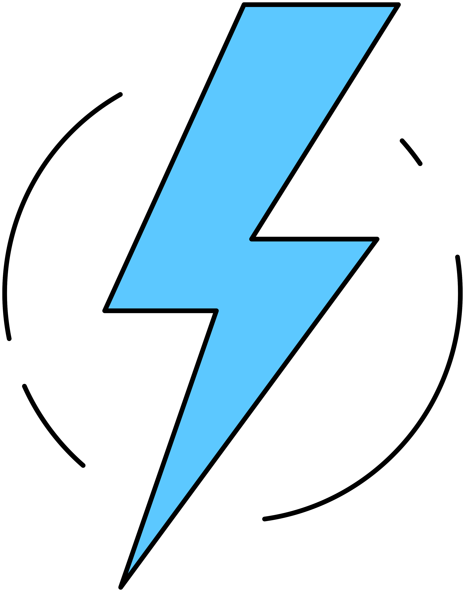
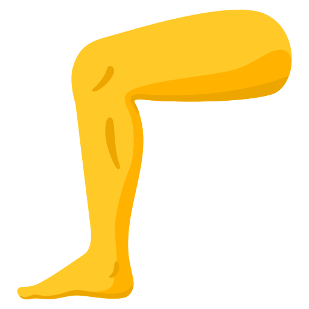
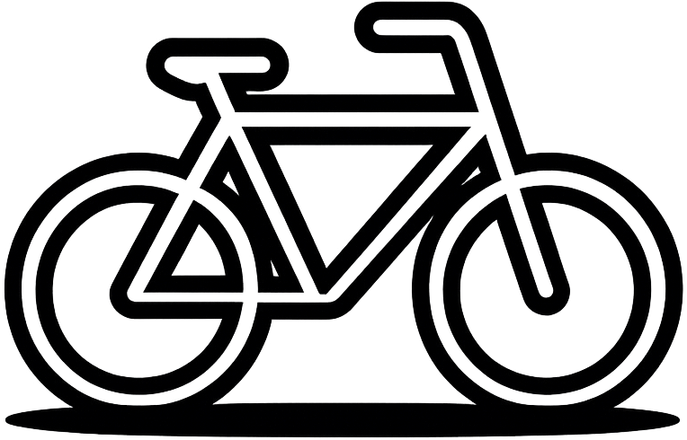
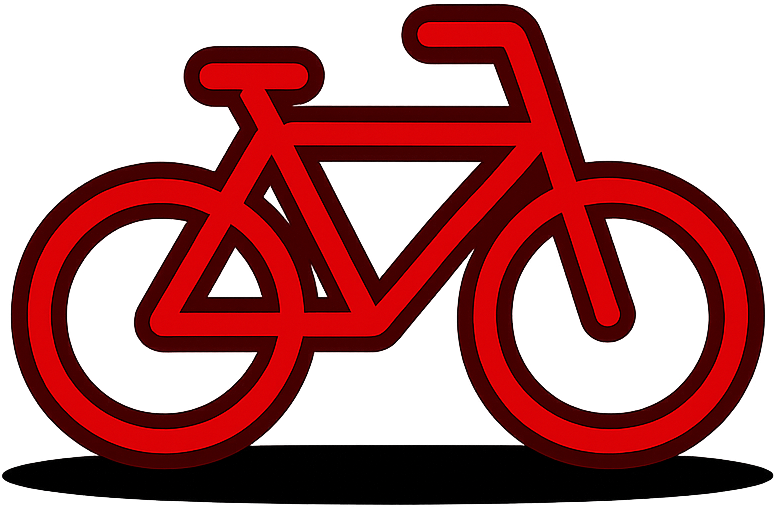
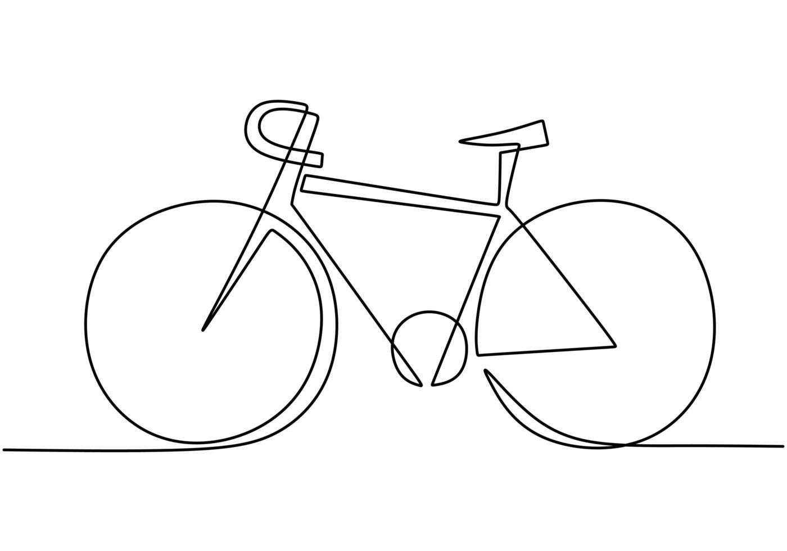

Toutes




Stations Vélo'v
☰
Itinéraire
Calculer un itinéraire
×
Adresse de départ
Sélectionner sur la carte
Adresse d'arrivée
Sélectionner sur la carte
Type de vélo :
Peu importe
Mécanique
Électrique
Réinitialiser
Calculer l'itinéraire

Évolution de la station
×
Données à afficher :
Vélos totaux
Places libres
Vélos mécaniques
Vélos électriques
Mettre à jour le graphique